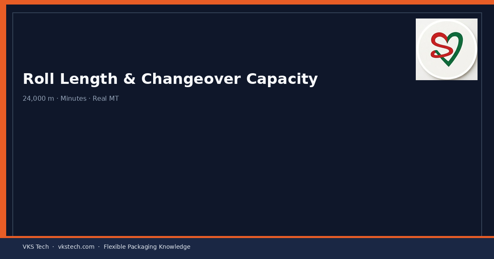
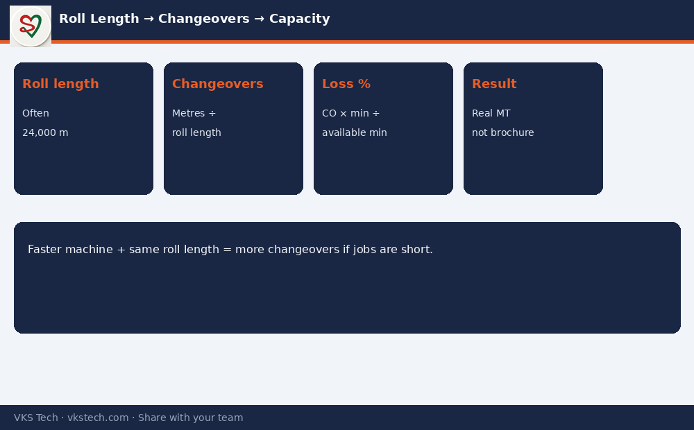

📏 A 24,000 m Roll and a 25-Minute Changeover Quietly Decide How Many Tonnes Your Press Can Really Make.
📖 10-min read · Capacity planning · PPC
Brochure speed assumes continuous running. Real converting capacity is limited by how often you stop to change jobs or rolls and how long each stop lasts. Once you fix average roll length and average changeover time, the number of changeovers — and the loss % — can be calculated instead of guessed.
- Roll length (often ~20,000–30,000 m; many plants use 24,000 m as a planning default)
- Changeovers/day ≈ theoretical metres per day ÷ roll length
- Changeover loss % ≈ (changeovers × minutes per change) ÷ available minutes × 100
- Faster machines with the same roll length create more changeovers if jobs are short

Why PPC Must Own This Number
Without this calculation, capacity meetings argue opinions. With it, you can show that reducing changeover from 30 to 20 minutes, or increasing average job length, moves monthly MT more than buying a slightly faster press.
Next → Production Capacity Calculator (with live tool)
📏 24,000 m रोल और 25-मिनट चेंजओवर चुपचाप तय करते हैं कि आपकी प्रेस वास्तव में कितने टन बना सकती है।
📖 10-मिनट पढ़ें · क्षमता प्लानिंग · PPC
Changeovers/day ≈ theoretical metres ÷ roll length
Loss % ≈ (changeovers × minutes) ÷ available minutes × 100
अगला → प्रोडक्शन क्षमता कैलकुलेटर